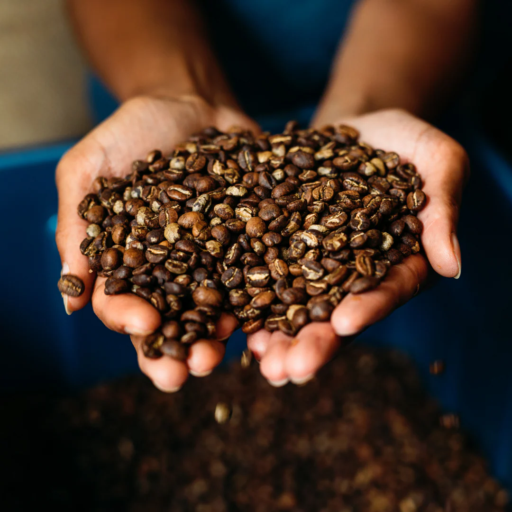
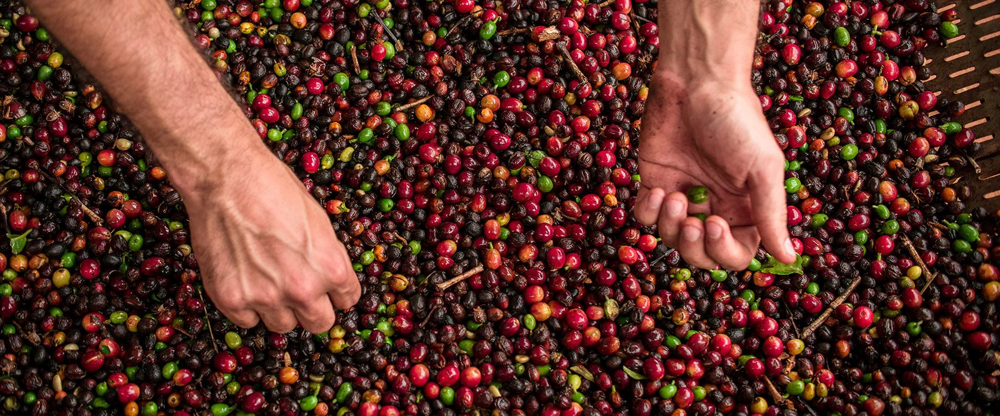
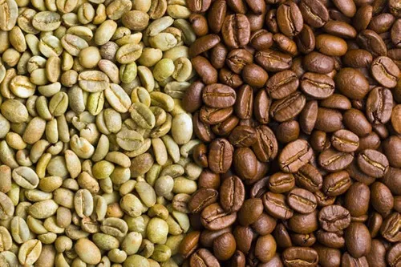
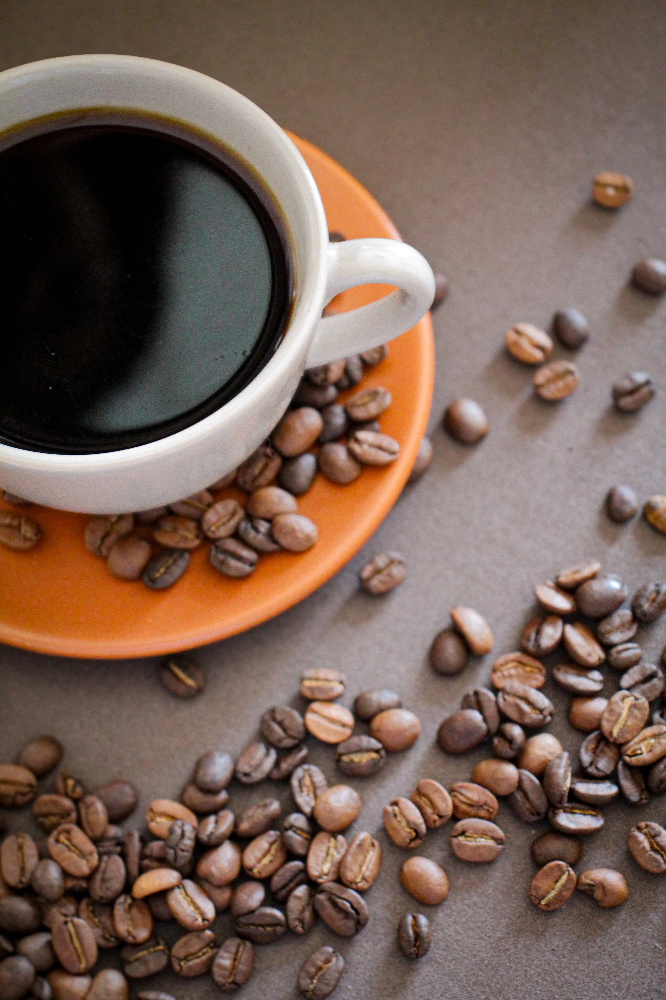
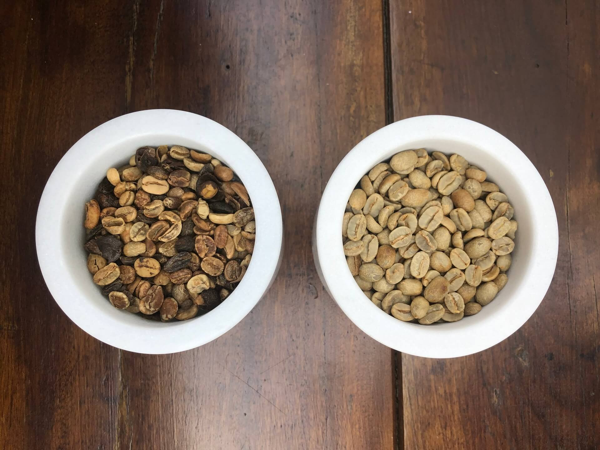
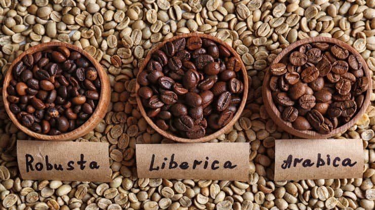
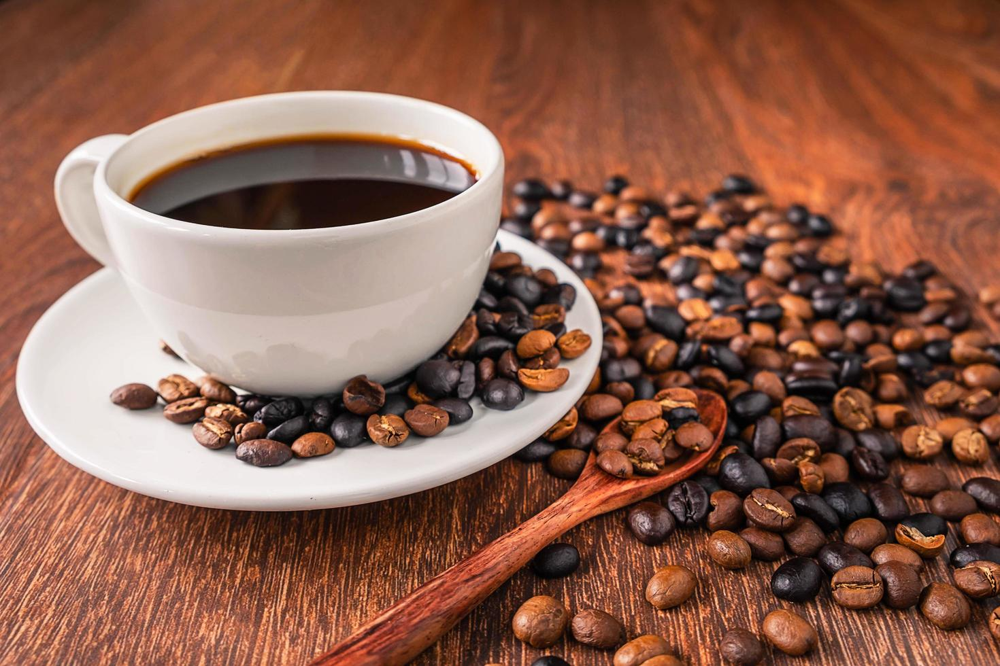
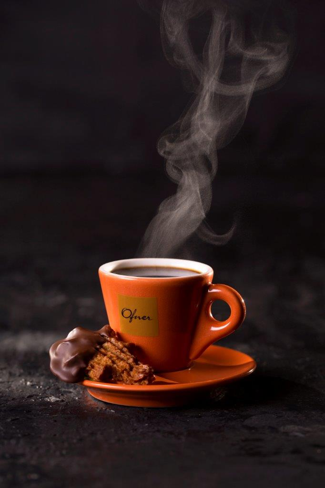
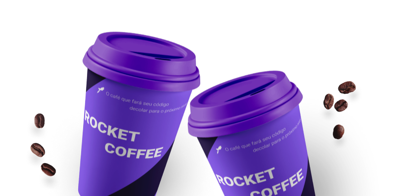

O café que impulsiona o seu código.
Descubra a ciência por trás do grão perfeito na vitrine learnTECH.
Explorar Menu
EDIÇÃO LIMITADA
A Arte do Grão
EXPERIMENTAR AGORA
A Arte do Grão
Digital
Unimos a tradição do Grão Moente com a energia pulsante da Planet Coffee. Sinta o aroma do café real processado com precisão técnica.
100%
Arábica
Neon
Roast
FUSION ORBITAL
Da Colheita ao Código









MÉTODOS
A Arte do
A Arte do
Preparo
Do V60 à Prensa Francesa, cada técnica extrai uma nota diferente do software orgânico que chamamos de grão.
